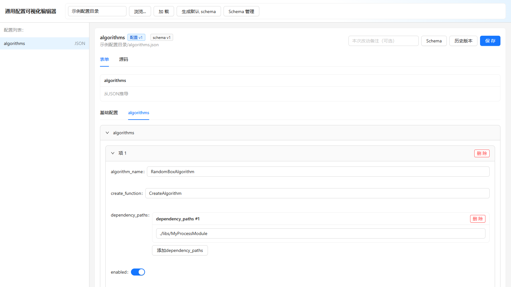
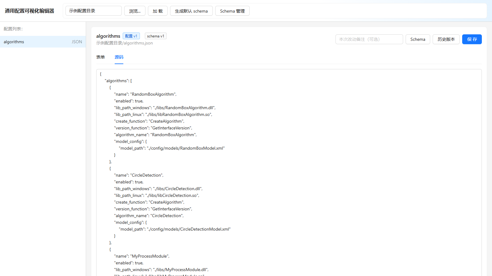
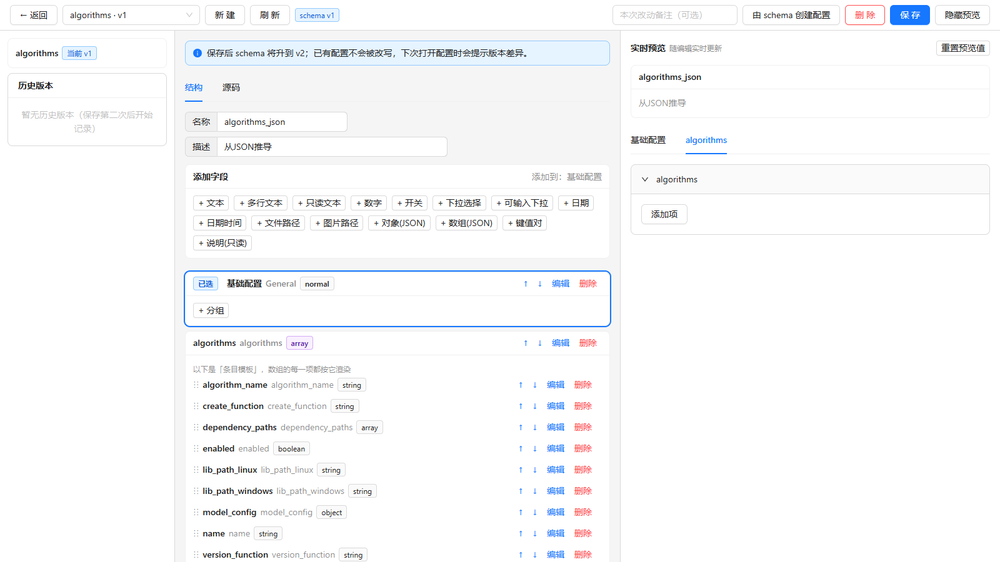

Windows
x64 架构
Windows x64
适用于 Windows 10 / 11 64位系统。提供双击向导安装包与企业静默部署 MSI 包。
v0.1.0 正式发布 · 开源跨平台配置管理工作站 · AGPL-3.0
专为复杂研发工程、算法调优与自动化系统打造的高性能桌面应用。支持 JSON 与 XML 双格式，提供结构化表单与高精源码双向同步编辑，具备 Schema 智能逆向推导与独立快照安全版本控制。
原生支持 Windows x64 · macOS (Apple Silicon / Intel) · Linux x64 · 无需运行环境
内置示例工作区算法配置交互示意图
下载客户端
开箱即用，无需配置 Node.js、Rust 或任何编译器环境。所有安装包由 GitHub Actions 跨平台矩阵自动化编译并上传至 GitHub Releases。
当前最新版本：v0.1.0 · 已对齐 GitHub Releases 官方发布安装包
适用于 Windows 10 / 11 64位系统。提供双击向导安装包与企业静默部署 MSI 包。
原生适配 macOS 11.0+。按处理器架构选择专属 DMG 镜像，打开后拖入“应用程序”。
适用于 Ubuntu、Debian、Fedora、Arch 等主流发行版。提供免安装 AppImage 与 DEB 安装包。
当前构建使用临时自签名。若 macOS 拦截打开，请前往 「系统设置」→「隐私与安全性」 点击 「仍要打开」；或在终端中执行：sudo xattr -cr /Applications/Config\ Manager.app 即可解除隔离。
下载 .AppImage 后，在终端执行 chmod +x ConfigReader.Config.Manager_*.AppImage 赋予执行权限，双击或在终端输入 ./ConfigReader.Config.Manager_*.AppImage 即可直接运行。
更多版本发布记录与校验信息，请访问 GitHub Releases v0.1.0 或查看 GitHub Actions 构建记录。
界面预览
以下截图为 ConfigManager 运行内置算法配置工程时的真实界面，涵盖日常表单维护、精确源码控制与图形化 Schema 设计。

根据 Schema 分组自动渲染卡片与输入控件，支持数值上下限校验、开关切换、联动条件展示与动态数组管理，彻底杜绝手写语法错误。

为进阶开发者提供原汁原味的 JSON 与 XML 文本视图，保留原有缩进排版与层级结构，支持快速文本拷贝、批量替换与底层语法核对。

告别手写繁琐的 JSON Schema。图形化编排分组层级、字段类型、校验规则与联动条件，右侧实时交互渲染表单效果，所见即所得。
深度特性
从配置浏览、结构约束、日常修改到故障回滚，ConfigManager 将分散的配置工作收拢至安全闭环。
结构化表单负责直观交互与防呆校验；源码视图保留对底层 JSON / XML 的直接控制。两者无缝切换，编辑内容保留在内存缓冲中，显式保存杜绝误写。
采用特有的 Groups Schema 规范，定义字段范围、枚举、必填项与动态条件联动。即使没有任何现成 Schema，应用也能自动从已有配置推导出可用表单。
内置完整的 Schema 管理控制台。支持一键生成默认 Schema、图形化增删字段与调整校验规则，并在右侧实时预览最终动态表单效果。
配置文件与 Schema 拥有各自独立的版本体系。每次保存前自动在 history/ 生成带时间戳的完整快照，支持无损载入历史对比并随时安全回滚。
所有版本号与操作审计信息独立存储在 .meta/ 目录，绝不篡改用户的业务配置内容。底层采用临时文件与原子重命名写入，彻底规避断电损坏。
所有配置解析与文件 IO 完全运行在用户本地设备与沙箱环境中，无远程云端依赖，无任何远程遥测，专为企业内网、涉密系统与工程现场量身打造。
使用指南
简单清晰的操作步骤，让新手工程师在几分钟内即可掌握整个配置管理流程。
config/ 子目录下。
history/ 生成备份快照，更新 .meta/ 版本记录并原子覆写。
自动识别 .json、.xml 以及配套 schemas/
表单与源码双向校验，未保存前绝不影响磁盘
保存前强制完整备份旧文件至 history/ 目录
临时文件校验后原子替换原文件，杜绝写入中断损坏
历史快照载入后仅更新前端编辑区，确认满意后显式点击保存才会写回磁盘，保护生产环境无后顾之忧。
工作区规范
无需重构现有的项目结构。只需将配置目录指定给 ConfigManager，系统即可自动按照业界最佳实践管理 Schema、历史与元数据。
配置内容保持原生标准语法，不掺杂任何私有标记。
元数据存储在 .meta/，历史快照存储在 history/。
workspace_root/ # 配置工作区根目录
├── algorithms.json # 业务配置文件 (JSON 格式)
├── camera_config.xml # 业务配置文件 (XML 格式)
│
├── schemas/ # 对应的 Groups Schema 定义目录
│ ├── algorithms.schema.json # algorithms.json 专用表单规则
│ └── camera_config.schema.json
│
├── history/ # 变更历史快照 (点击保存时自动生成)
│ ├── algorithms.json.1737600000.bak
│ └── algorithms.schema.json.1737600000.bak
│
└── .meta/ # 版本元数据与审计记录 (不侵入原文件)
├── algorithms.json.meta.json
└── algorithms.schema.json.meta.json底层工程
融合现代 Web 技术的灵活交互与系统级语言的高性能安全性，为桌面端生产力工具树立标杆。
| 架构分层 | 核心技术 / 组件 | 职能说明与技术优势 |
|---|---|---|
| 桌面容器层 | Tauri 2.0 (Rust) | 替代庞大臃肿的 Chromium 引擎，采用系统原生 Webview，启动速度大幅提升，内存占用减少 80% 以上。 |
| 系统核心层 | Rust 1.75+ Native | 负责本地文件目录扫描、原子写入（tempfile）、路径穿越安全防御、流式 JSON / XML 高性能序列化。 |
| 前端展现层 | React 18 + TypeScript | 组件化渲染、严格类型保障与高效局部刷新，实现表单控件、源码编辑器与快照视图的高性能渲染。 |
| UI 组件系统 | Ant Design 5 (Antd) | 企业级设计规范与完备控件支持，提供卡片抽屉、滑动条、微调器与弹窗，打造专业桌面体验。 |
| 持续集成与交付 | GitHub Actions CI/CD | 多操作系统（Windows、macOS ARM/Intel、Linux）跨平台矩阵自动化编译与 Release 自动发布。 |
解答疑惑
目前正式版已全面支持 JSON 和 XML 格式的双向编辑、表单推导与版本快照。YAML 与 TOML 格式的原生支持已列入开发路线图（Roadmap v0.3.0），敬请期待。
绝对不会。 ConfigManager 秉承非侵入式理念，版本号、修改者信息与变更哈希均独立保存在 .meta/ 隐藏目录下。写入原配置文件时保持纯净的标准语法，绝无杂质。
完全可以。 系统内置逆向结构推导引擎，载入未配对 Schema 的配置文件时会自动推导字段类型并渲染表单。点击「生成默认 Schema」还可一键在 schemas/ 下创建规范文件。
因为当前发布版本采用自签名证书。只需打开「系统设置」→「隐私与安全性」，找到阻止提示并点击「仍要打开」；或在终端中运行 sudo xattr -cr /Applications/Config\ Manager.app 即可完美运行。
旧配置自动备份在工作区目录下的 history/ 文件夹中，命名带有具体时间戳。不仅可以直接在编辑器「历史」标签页中一键载入对比恢复，也可手动直接拷贝备份文件。
100% 纯本地运行。 ConfigManager 没有搭建任何远程数据回传通道或遥测脚本，全部文件操作均发生在本地沙箱中，非常适合保密工程、研究所及军工工业现场。
开源共建
遇到使用问题、功能建议或需要适配新特性？欢迎通过 GitHub 与社区互动。